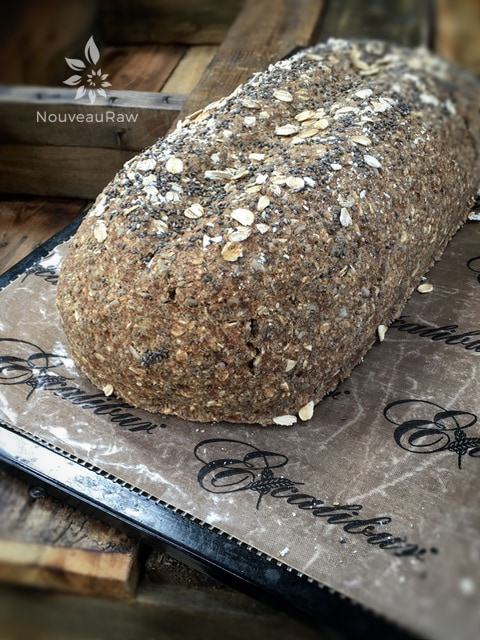
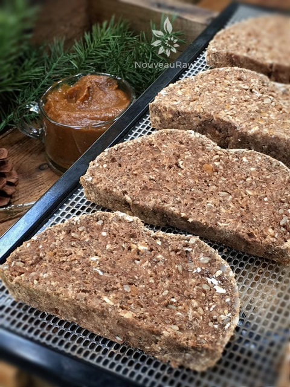
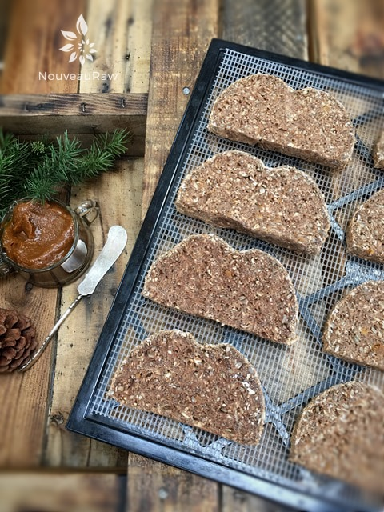
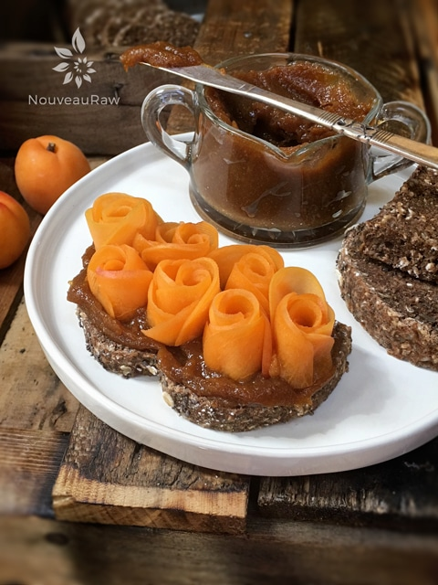

Apricot Sweetened Bread with Apricot Jam Spread
Apricot Sweetened Bread with Apricot Jam Spread

~ raw, vegan, gluten-free ~
I have never made it a secret that I LOVE bread. I LOVE(d) any flavor, any texture….served in any way. I stopped eating bread (gluten) about six years ago, and it was by far the hardest thing I ever gave up. For those of you who stopped eating bread due to gluten allergies, I am almost positive that we share the same feelings towards it.
Ever wonder why white carbs, such as bread, are so addictive? It has to do with chemicals that travel from the stomach to the part of the brain where you produce dopamine, a hormone, and neurotransmitter that affects the brain’s pleasure and reward centers.
Once these areas of the brain are stimulated, you’ll keep on wanting more of the addictive substance, whether it’s alcohol, drugs, or carbs. Shew, what a trip.
As you read through the ingredient list for this fabulous bread, you are going to stop and linger when your eyes land on psyllium husks. You may scratch your head and ask yourself why a person needs to add this to the bread.
Psyllium husks are the secret to creating moist bread that is nice and spongy instead of dense and dry. Can you make this recipe without it? Yes. But do I recommend it? No. I hope you give this recipe a try, and if you do, please let me know what you think.
Tips on Almond Pulp
People tend always to ask why I use the almond pulp and not the whole nut. It is the key ingredient that helped me to create a light and airy bread batter. You can use whole nuts that have been ground down, but the bread will be heavier and denser. Nothing wrong with that, just not the result that I created for the bread texture.
Every batch of pulp will differ in moisture. This depends on how much of the milk you can squeeze from the nut bag. Therefore, you may need to adjust the amount of liquids being used in pulp recipes. If it is a really dry feeling, more moisture may need to be added. Or if the pulp is wet, less moisture would probably be necessary.
It is also best to make sure that the pulp is unflavored, and that is a step that has to be taken when creating almond milk. There is a link below that you can click on to learn more about this process if you are unfamiliar with it. BUT should your pulp already have small hints of sweetness to it, not to worry… I doubt it would be enough to affect the outcome of this cake.
Yields 1 (8 1/2 x 4 1/4 x 2 1/2) loaf
- 3 Tbsp maple syrup
- 2 ripe bananas
- 1 3/4 cups water
- 1/2 tsp liquid stevia
- 1 cup diced dried apricots
- 4 cups packed, moist almond pulp
Apricot spread; yields 3/4 cup
- 1 cup diced dried apricots, hydrated in hot water 15 mins
- 2 Tbsp + water
Preparation:
Bread:
- In the food processor, fitted with the “S” blade, pulse together the oats, sunflower seeds, chia seeds, psyllium, salt, cinnamon, and allspice. Place in a bowl.
- In the same food processor bowl, combine the maple syrup, bananas, water, stevia, and apricots. Process till mixed but not too long that you break down the apricots too much.
- Add to the dry ingredients, along with the almond pulp. With your hands, mix everything very well. If the batter feels too dry, add a little water 1 Tbsp at a time.
- Place the batter on a non-stick surface and shape it into a loaf. Sprinkle crushed rolled oats and chia seeds on top.
- Transfer to the mesh sheet that comes with the dehydrator.
- Dehydrate at 145 degrees for 1 hour to create a crust on the outside.
- Remove from the dehydrator, place the loaf on a cutting board, and slice pieces to the desired thickness. Don’t slice the bread on the mesh; you don’t want to risk cutting it.
- I did mine at about 1 inch.
- When slicing the bread at this stage, be sure to use a serrated knife (blade has small teeth, this helps to cut through nice and smooth) Also, see-saw back and forth with downward pressure as you cut the slices. This will prevent the dough from squashing down.
- Return the bread to the mesh sheet laying the pieces flat.
- Decrease the temperature to 115 degrees (F) and continue to dehydrate for roughly 6 hours.
- As an indicator, if it is dry enough, touch the center of the bread slices. You don’t want it to be doughy, but you also don’t want the bread to dry out too much.
- Shelf life and storage: My recommendation would be to store this bread in an air-tight container, in the fridge, for 3-5 days.
- The more moisture that is left in your bread, the shorter the shelf life. Therefore, shelf life will vary with your drying technique. Whenever I make this bread, it never lasts very long enough to spoil.
- Keep in mind, the whole purpose of eating a raw diet is to eat foods at their peak of freshness, so don’t expect this bread to have a long shelf life.
Apricot spread:
- Drain the apricots from the soak water, don’t discard the liquid, keep it for step 2.
- Add to the food processor, along with 2 Tbsp soak water, and process till creamy. Add more water if needed.
- This spread should keep for 5-7 days in the fridge.
- To learn more about maple syrup by clicking (here).
- Click (here) to learn why I use stevia.
- Why do I specify Ceylon cinnamon? Click (here) to learn why.
- What is Himalayan pink salt, and does it matter? Click (here) to read more about it.
- Are oats gluten-free? Yes, read more about that (here).
- Are oats raw? Yes, they can be found. Click (here) to learn more.
- Do I need to soak and dehydrate oats? Not required but recommended. Click (here) to see why.
- How does psyllium work in a recipe? Learn more (here).
Culinary Explanations:
- Why do I start the dehydrator at 145 degrees (F)? Click (here) to learn the reason behind this.
- When working with fresh ingredients, it is essential to taste test as you build a recipe. Learn why (here).
- Don’t own a dehydrator? Learn how to use your oven (here). I do, however honestly believe that it is a worthwhile investment. Click (here) to learn what I use.

The whole loaf is taken out of the dehydrator after 145 degrees (F) for 1 hour.

Slice between 1/2 -1″ thick, and place on the mesh sheet that comes with the dehydrator. Continue to dry at 115 degrees (F) until the desired texture is met.


© AmieSue.com